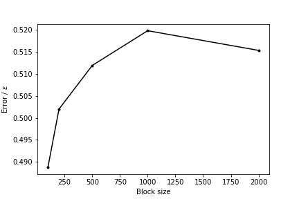

|
|
|
| |
|
|
This tutorial will teach you how to use block averaging techniques to compute the error bars on the estimates for the ensemble average and the free energy that you obtain from a biased simulation. Please note that the ensemble averages that you obtain from simulations are always estimates and that you should thus always endeavor to provide an estimate of the error bar.
Once this tutorial is completed students will
The TARBALL for this project contains the following files:
This tutorial has been tested on v2.5 but it should also work with other versions of PLUMED.
Also notice that the .solutions direction of the tarball contains correct input files for the exercises. Please only look at these files once you have tried to solve the problems yourself. Similarly the tutorial below contains questions for you to answer that are shown in bold. You can reveal the answers to these questions by clicking on links within the tutorial but you should obviously try to answer things yourself before reading these answers.
In this tutorial we are going to study a very simple physical system; namely, seven Lennard Jones atoms in a two dimensional space. This simple system has been extensively studied as has often been used to benchmark new simulation techniques. In addition, the potential energy landscape has been fully characterized and it is known that only the four structurally-distinct minima shown below exist:
In the exercises that follow we are going to learn how to use PLUMED to determine the relative free energies of these four structures by running molecular dynamics simulations as well as how to find suitable error bars on the energy of these minima. First of all, however, we are going to learn how to estimate the average energy of this system and how to compute the error on our estimate for the average. We will thus start with a very brief recap of the theory behind taking an ensemble average.
When performing unbiased and biased simulations the aim is always to estimate the ensemble average for some quantity \(\langle A \rangle\). We know from statistical mechanics that, if we are in the canonical (NVT) ensemble, the value of this ensemble average is given by:
\[ \langle A \rangle = \frac{ \int \textrm{d}x \textrm{d}p A(x) e^{-\frac{H(x,p)}{k_B T}} }{ \int \textrm{d}x\textrm{d}p e^{-\frac{H(x,p)}{k_B T}} } \]
where \(H(x,p)\) is the Hamiltonian for our system, \(T\) is the temperature and \(k_B\) is the Boltzmann constant. We also know, however, that for all but the simplest possible systems, it is impossible to solve the integrals in this expression analytically. Furthermore, because this expression involves integrals over all the \(3N\) position and \(3N\) momentum coordinates, using a numerical integration method that employs a set of regularly spaced grid points in the \(6N\) dimensional phase space would be prohibitively expensive. We are thus forced to instead generate a time series of random variables and to approximate the ensemble average using:
\[ \langle A \rangle \approx \frac{1}{T} \sum_{t=1}^T A_t \qquad \qquad \textrm{Equation 1} \]
where each \(A_t\) in the expression above is a sample from the distribution:
\[ P(A_t = a ) = \frac{ \int \textrm{d}x \textrm{d}p \delta(A(x)-a) e^{-\frac{H(x,p)}{k_B T}} }{ \int \textrm{d}x\textrm{d}p e^{-\frac{H(x,p)}{k_B T}} } \]
This distribution (thankfully) is exactly the distribution we are sampling from if we compute the values the observable \(A\) takes during the course of in an equilibrated molecular dynamics trajectory. We can thus calculate an approximate value for \(\langle A\rangle\) by computing the value of \(A\) for each of the frames in our trajectory and by computing the average value that \(A\) takes over the trajectory using equation 1. It is critical to remember, however, that the value we obtain for \(\langle A\rangle\) when we compute it this way is itself a random variable. When reporting ensemble averages calculated in this way we should thus endeavor to quantify the error in our estimate of this quantity by computing multiple estimates for \(\langle A\rangle\) and by using these multiple estimates to compute a variance for the underlying random variable. This tutorial will explain how this such error bars are computed in practice. At some stage you may find it useful to watch the following videos in order to understand the theory that is behind these calculations a little better.
Before getting into the business of computing an ensemble average we first need to setup the system we are going to study. In this tutorial we are going to use the MD code simplemd that is part of PLUMED. You can run this code by issuing the command:
plumed simplemd < in
where in here is the input file from the tar ball for this tutorial, which is shown below:
nputfile input.xyz outputfile output.xyz temperature 0.5 tstep 0.005 friction 0.1 forcecutoff 2.5 listcutoff 3.0 ndim 2 nstep 200000 nconfig 1000 trajectory.xyz nstat 1000 energies.dat
This input instructs PLUMED to perform 200000 steps of MD at a temperature of \(k_B T = 0.5 \epsilon\) starting from the configuration in input.xyz. The timestep in this simulation is 0.005 \(\sqrt{\epsilon}{m\sigma^2}\) and the temperature is kept fixed using a Langevin thermostat with a relaxation time of \(0.1 \sqrt{\epsilon}{m\sigma^2}\). Trajectory frames are output every 1000 MD steps to a file called trajectory.xyz. Notice also that in order to run the calculation above you need to provide an empty file called plumed.dat. This file is the input file to the PLUMED plugin, which, because this file is empty, is doing nothing when we run the calculation above.
Run a calculation using simplemd and the input above and visualize the trajectory that is output. Describe what happens during this calculation and explain why this is happening.
You should observe that all the atoms fly apart early on in the simulation and that the cluster evaporates. The cluster evaporates because at a temperature of \(k_B T = 0.5 \epsilon\) the gas state has a lower free energy than than the cluster state. To learn more: What happens
You can visualize what occurs during the trajectory by using a visualization package such as VMD (https://www.ks.uiuc.edu/Research/vmd/). If you are using VMD you can see the MD trajectory by using the command:
vmd trajectory.xyz
Change the parameters in the input file for simplemd so as to prevent the cluster from evaporating.
To learn more: No evaporation
To prevent the cluster from evaporating you need to lower the temperature in the file in. The cluster will not evaporate if the temperature is set equal to \(k_B T = 0.2 \epsilon\).
Now try to think how we can use a bias potential to stop the cluster from evaporating. Why might using a bias potential be preferable to the method that you have just employed? N.B. The next exercise is in the hidden section below so you need to expand it. Please try to come up with your own answer to the question of what bias potential we should be using before expanding this section by thinking about the material that was covered in Lugano tutorial: Using restraints.
\[ \mathbf{x}_\textrm{com} = \frac{1}{N} \sum_{i=1}^N \mathbf{x}_i \]
where \(\mathbf{x}_i\) is the position of the atom with the index \(i\). The distance between the atom with index \(i\) and the position of this center of mass, \(d_i\), can be computed using Pythagoras' theorem. These distances are then restrained by using the following potential:
\[ V(d_i) = \begin{cases} 100*(d_i-2.0)^2 & \textrm{if} \quad d_i > 2 \\ 0 & \textrm{otherwise} \end{cases} \]
as you can see this potential has no effect on the dynamics when these distances are less than 2 \(\epsilon\). If any atom is more than 2 \(\epsilon\) from the center of mass, however, this potential will drive it back towards the center of mass. The following cell contains a skeleton input file for PLUMED that gets it to calculate and apply this bias potential. Copy and paste the content above into the file plumed.dat and then fill in the blanks by looking up the documentation for these actions online and by reading the description of the calculation that you are to run above. Once you have got a working plumed.dat file run a calculation using simplemd again at a temperature of \(k_B T = 0.5 \epsilon\) and check to see if the bias potential is indeed preventing the cluster from evaporating. To learn more: The bias potential
If we lower the temperature of the simulation very little will happen. Yes the cluster will no longer evaporate but at the same time we will not see any transitions between the various basins in this energy landscape. We thus can use a bias potential to prevent the cluster from exploring gaseous configurations that do not interest us instead of lowering the temperature. In other words, we are going to add restraints that will prevent the cluster from evaporating. The particular restraint we are going to use will prevent all the atoms from moving more than \(2\sigma\) from the center of mass of the cluster. As the masses of all the atoms in the cluster are the same we can compute the position of the center of mass using: Click on the labels of the actions for more information on what each action computes

# this optional command tells VIM that this is a PLUMED file and to color the text accordingly
# vim: ft=plumed
# This tells PLUMED we are using Lennard Jones units
UNITS
NATURAL
# Calculate the position of the center of mass. We can then refer to this position later in the input using the label com.
com: COM __FILL__
# Add the restraint on the distance between com and the first atom
d1: DISTANCE __FILL__
UPPER_WALLS ( default=off ) use natural units ARG=d1 __FILL__
# Add the restraint on the distance between com and the second atom
d2: DISTANCE __FILL__
UPPER_WALLS __FILL__
# Add the restraint on the distance between com and the third atom
d3: DISTANCE __FILL__
UPPER_WALLS __FILL__
# Add the restraint on the distance between com and the fourth atom
d4: DISTANCE __FILL__
UPPER_WALLS __FILL__
# Add the restraint on the distance between com and the fifth atom
d5: DISTANCE __FILL__
UPPER_WALLS __FILL__
# Add the restraint on the distance between com and the sixth atom
d6: DISTANCE __FILL__
UPPER_WALLS __FILL__
# Add the restraint on the distance between com and the seventh atom
d7: DISTANCE __FILL__
UPPER_WALLS __FILL__
the input for this action is the scalar output from one or more other actions.
The previous sections showed you how to set up the simulations of the Lennard Jones cluster and reviewed some of the material on adding static bias potentials that was covered in the earlier hands-on sessions in the meeting. Now that we have completed all this we can move to the material on calculating appropriate error bars that we will cover in this tutorial. In this section you are going to work through the process of block averaging the trajectory yourself for a simple case in order to better understand the theory. In the final section we will then apply this technique to a more complex case. Without further ado then lets run a trajectory and collect some data to analyze.
Run a simulation of the Lennard Jones cluster at \(k_B T = 0.2 \epsilon\) using for 12000 steps using the input file below (but with the blanks filled in obviously). This calculation outputs the potential energy of the system for every tenth step in the trajectory to a file called energy.
# this optional command tells VIM that this is a PLUMED file and to color the text accordingly # vim: ft=plumed # This tells PLUMED we are using Lennard Jones units UNITSNATURAL# Calculate the position of the center of mass. We can then refer to this position later in the input using the label com. com: COM __FILL__ # Add the restraint on the distance between com and the first atom d1: DISTANCE __FILL__ UPPER_WALLS( default=off ) use natural unitsARG=d1 __FILL__ # Add the restraint on the distance between com and the second atom d2: DISTANCE __FILL__ UPPER_WALLS __FILL__ # Add the restraint on the distance between com and the third atom d3: DISTANCE __FILL__ UPPER_WALLS __FILL__ # Add the restraint on the distance between com and the fourth atom d4: DISTANCE __FILL__ UPPER_WALLS __FILL__ # Add the restraint on the distance between com and the fifth atom d5: DISTANCE __FILL__ UPPER_WALLS __FILL__ # Add the restraint on the distance between com and the sixth atom d6: DISTANCE __FILL__ UPPER_WALLS __FILL__ # Add the restraint on the distance between com and the seventh atom d7: DISTANCE __FILL__ UPPER_WALLS __FILL__ # Get the potential energy e: ENERGY # Print the potential energy to a file PRINTthe input for this action is the scalar output from one or more other actions.ARG=__FILL__the input for this action is the scalar output from one or more other actions.FILE=energythe name of the file on which to output these quantitiesSTRIDE=10compulsory keyword ( default=1 ) the frequency with which the quantities of interest should be output
The exercise below will take you through the process of calculating block averages and hence error bars on the data you generated.
Notice that we can calculate the block averages that were required for the block averaging technique that was explained in the programming exercise using PLUMED directly. The input below (once you fill in the gaps) calculates and prints block averages over windows of 100 trajectory frames. See if you can fill in the blanks and compare the result you obtain with the result that you obtain by running a python script to convince yourself that PLUMED calculates these block averages correctly.
# this optional command tells VIM that this is a PLUMED file and to color the text accordingly # vim: ft=plumed # This tells PLUMED we are using Lennard Jones units UNITSNATURAL# Calculate the position of the center of mass. We can then refer to this position later in the input using the label com. com: COM __FILL__ # Add the restraint on the distance between com and the first atom d1: DISTANCE __FILL__ UPPER_WALLS( default=off ) use natural unitsARG=d1 __FILL__ # Add the restraint on the distance between com and the second atom d2: DISTANCE __FILL__ UPPER_WALLS __FILL__ # Add the restraint on the distance between com and the third atom d3: DISTANCE __FILL__ UPPER_WALLS __FILL__ # Add the restraint on the distance between com and the fourth atom d4: DISTANCE __FILL__ UPPER_WALLS __FILL__ # Add the restraint on the distance between com and the fifth atom d5: DISTANCE __FILL__ UPPER_WALLS __FILL__ # Add the restraint on the distance between com and the sixth atom d6: DISTANCE __FILL__ UPPER_WALLS __FILL__ # Add the restraint on the distance between com and the seventh atom d7: DISTANCE __FILL__ UPPER_WALLS __FILL__ # Get the potential energy e: ENERGY # Calculate block averages of the potential energy av_e: AVERAGEthe input for this action is the scalar output from one or more other actions.ARG=__FILL__the input for this action is the scalar output from one or more other actions.CLEAR=__FILL__compulsory keyword ( default=0 ) the frequency with which to clear all the accumulated data.STRIDE=__FILL__ # Print the block averages of the potential energy to a file PRINTcompulsory keyword ( default=1 ) the frequency with which the data should be collected and added to the quantity being averagedARG=__FILL__the input for this action is the scalar output from one or more other actions.STRIDE=__FILL__compulsory keyword ( default=1 ) the frequency with which the quantities of interest should be outputFILE=energythe name of the file on which to output these quantities
At some point (probably not during the tutorial as you will not have time) you can use the following video and quiz to understand the theory behind this process of block averaging.
In this final exercise we are going to run a metadynamics simulation in order to see the Lennard Jones cluster explore all of the basins in the energy landscape that were shown in figure lugano-4-lj7-minima. We will extract a free energy surface from this simulation trajectory and will use the block averaging technique that we learnt about in the previous section to quote error bars on this free energy surface. There are three important differences between the way we apply the block averaging techinique in this section and the way that we applied the block averaging technique in the previous section; namely:
We will not dwell too much on these issues in what follows. For the interested reader they are discussed at length in https://arxiv.org/abs/1812.08213. Furthermore, the Trieste tutorial: Averaging, histograms and block analysis tutorial deals with each of these issues in turn. If you have sufficient time at the end you may therefore like to work through the exercises in that tutorial in order to better understand how the block averaging technique that was discussed in the previous section has been extended so as to resolve these issues.
We can drive transitions between the four possible minima in the Lennard-Jones-seven potential energy landscape by biasing the second and third central moments of the distribution of coordination numbers. The nth central moment of a set of numbers, \(\{X_i\}\) can be calculated using:
\[ \mu^n = \frac{1}{N} \sum_{i=1}^N ( X_i - \langle X \rangle )^n \qquad \textrm{where} \qquad \langle X \rangle = \frac{1}{N} \sum_{i=1}^N X_i \]
Furthermore, we can compute the coordination number of our Lennard Jones atoms using:
\[ c_i = \sum_{i \ne j } \frac{1 - \left(\frac{r_{ij}}{1.5}\right)^8}{1 - \left(\frac{r_{ij}}{1.5}\right)^{16} } \]
where \(r_{ij}\)__FILL__ is the distance between atom \(i\) and atom \(j\). The following cell contains a skeleton input file for PLUMED that gets it to perform metadynamics using the second and third central moments of the distribution of coordination numbers as a CV.
# this optional command tells VIM that this is a PLUMED file and to color the text accordingly # vim: ft=plumed # This tells PLUMED we are using Lennard Jones units UNITSNATURAL# Calculate the position of the center of mass. We can then refer to this position later in the input using the label com. com: COM __FILL__ # Add the restraint on the distance between com and the first atom d1: DISTANCE __FILL__ UPPER_WALLS( default=off ) use natural unitsARG=d1 __FILL__ # Add the restraint on the distance between com and the second atom d2: DISTANCE __FILL__ UPPER_WALLS __FILL__ # Add the restraint on the distance between com and the third atom d3: DISTANCE __FILL__ UPPER_WALLS __FILL__ # Add the restraint on the distance between com and the fourth atom d4: DISTANCE __FILL__ UPPER_WALLS __FILL__ # Add the restraint on the distance between com and the fifth atom d5: DISTANCE __FILL__ UPPER_WALLS __FILL__ # Add the restraint on the distance between com and the sixth atom d6: DISTANCE __FILL__ UPPER_WALLS __FILL__ # Add the restraint on the distance between com and the seventh atom d7: DISTANCE __FILL__ UPPER_WALLS __FILL__ # Calculate the collective variables c1: COORDINATIONNUMBERthe input for this action is the scalar output from one or more other actions.SPECIES=__FILL__this keyword is used for colvars such as coordination number.MOMENTS=__FILL__calculate the moments of the distribution of collective variables.SWITCH={RATIONAL __FILL__ } # Do metadynamics METADThis keyword is used if you want to employ an alternative to the continuous switching function defined above.ARG=__FILL__the input for this action is the scalar output from one or more other actions.HEIGHT=__FILL__the heights of the Gaussian hills.PACE=__FILL__compulsory keyword the frequency for hill additionSIGMA=__FILL__compulsory keyword the widths of the Gaussian hillsGRID_MIN=-1.5,-1.5the lower bounds for the gridGRID_MAX=2.5,2.5the upper bounds for the gridGRID_BIN=500,500the number of bins for the gridBIASFACTOR=5use well tempered metadynamics and use this bias factor.
This input should be modified to instruct PLUMED to add Gaussian kernels with a bandwidth of 0.1 in both the second and third moment of the distribution of coordination numbers and a height of 0.05 \(\epsilon\) every 500 MD steps. The metadynamics calculation should then be run using simplemd at a temperature of \(k_B T = 0.1 \epsilon\).
You can then run a simplemd calculation using the following input:
inputfile input.xyz outputfile output.xyz temperature 0.1 tstep 0.005 friction 1 forcecutoff 2.5 listcutoff 3.0 ndim 2 nstep 1000000 nconfig 100 trajectory.xyz nstat 1000 energies.dat
and the command
plumed simplemd < in
Having now run the metadynamics we will need to post process our trajectory with driver in order to extract the free energy by reweighting. Furthermore, notice that, in order to do our block averaging, we are going to want to extract multiple estimates for the histogram so that we can do our block averaging. We are thus going to use the following input file to extract our estimates of the histogram:
# this optional command tells VIM that this is a PLUMED file and to color the text accordingly # vim: ft=plumed UNITSNATURAL# We can delete the parts of the input that specified the walls and disregrad these in our analysis # It is OK to do this as we are only interested in the value of the free energy in parts of phase space # where the bias due to these walls is not acting. c1: COORDINATIONNUMBER( default=off ) use natural unitsSPECIES=__FILL__this keyword is used for colvars such as coordination number.MOMENTS=__FILL__calculate the moments of the distribution of collective variables.SWITCH={RATIONAL __FILL__} # The metadynamics bias is restarted here so we consider the final bias as a static bias in our calculations METADThis keyword is used if you want to employ an alternative to the continuous switching function defined above.ARG=__FILL__the input for this action is the scalar output from one or more other actions.HEIGHT=0.05the heights of the Gaussian hills.PACE=50000000compulsory keyword the frequency for hill additionSIGMA=0.1,0.1compulsory keyword the widths of the Gaussian hillsGRID_MIN=-1.5,-1.5the lower bounds for the gridGRID_MAX=2.5,2.5the upper bounds for the gridGRID_BIN=500,500the number of bins for the gridTEMP=0.1the system temperature - this is only needed if you are doing well-tempered metadynamicsBIASFACTOR=5use well tempered metadynamics and use this bias factor.RESTART=YES # This adjusts the weights of the sampled configurations and thereby accounts for the effect of the bias potential rw: REWEIGHT_BIASallows per-action setting of restart (YES/NO/AUTO)TEMP=0.1 # Calculate the histogram and output it to a file hh: HISTOGRAMthe system temperature.ARG=c1.*the input for this action is the scalar output from one or more other actions.GRID_MIN=-1.5,-1.5compulsory keyword the lower bounds for the gridGRID_MAX=2.5,2.5compulsory keyword the upper bounds for the gridGRID_BIN=200,200the number of bins for the gridBANDWIDTH=0.02,0.02compulsory keyword the bandwidths for kernel density estimationLOGWEIGHTS=__FILL__list of actions that calculates log weights that should be used to weight configurations when calculating averagesCLEAR=__FILL__ DUMPGRIDcompulsory keyword ( default=0 ) the frequency with which to clear all the accumulated data.GRID=hhcompulsory keyword the action that creates the grid you would like to outputFILE=my_histogram.datcompulsory keyword ( default=density ) the file on which to write the grid.STRIDE=2500compulsory keyword ( default=0 ) the frequency with which the grid should be output to the file.
Once you have filled in the blanks in this input you can then run the calculation by using the command:
> plumed driver --ixyz trajectory.xyz --initial-step 1
You must make sure that the HILLS file that was output by your metadynamics simulation is available in the directory where you run the above command. If that condition is satisfied though you should generate a number of files containing histograms that will be called: analysis.0.my_histogram.dat, analysis.1.myhistogram.dat etc. These files contain the histograms constructed from each of the blocks of data in your trajectory. You can merge them all to get the final free energy surface, which can be calculated using the well known relation between the histogram, \(P(s)\), and the free energy surface, \(F(s)\):
\[ F(s) = - k_B T \ln P(s) \]
that is employed in the following python script:
Copy this script to a file called merge-histograms.py and then run it on your data by executing the command:
> python merge-histograms.py > final-histogram.dat
This will output the final average histogram together with some error bars. You can plot the free energy surface you obtain by using gnuplot and the following command:
gnuplot> sp 'final-histogram.dat' u 1:2:3 w pm3d
Similarly you can get a sense of how the error in the estimate of the free energy depends on the value of the CV by using the command:
gnuplot> sp 'final-histogram.dat' u 1:2:4 w pm3d
More usefully, however, if you open the final-histogram.dat file you find that the first line reads:
# Average error for historgram is <average-histogram-error> and thus average energy in free energy is <average-free-energy-error>
You can thus read off the average error in the estimate of the free energy from this top line directly.
Repeat the analysis of the trajectory that was discussed in this section with different block sizes. Use the results you obtain to draw a graph showing how the average error on the estimate of the free energy depends on the block size
To learn more: Expected result
You should be able to extract a graph that looks something like the one shown below. The error is small when the block size is small because the correlations between the trajectory frames cause this quantity to be underestimated. As the block size increases, however, the error increases until it eventually flattens out.

The error in the estimate of the free energy as a function of the size of the blocks.
This exercise has explained the block averaging technique and has shown you how this technique can be used to extract the errors in estimates of the free energy. You can learn more about the background to this technique and the business of reweighting biased trajectories in particular by working through Trieste tutorial: Averaging, histograms and block analysis or by reading https://arxiv.org/abs/1812.08213.
 1.8.17
1.8.17